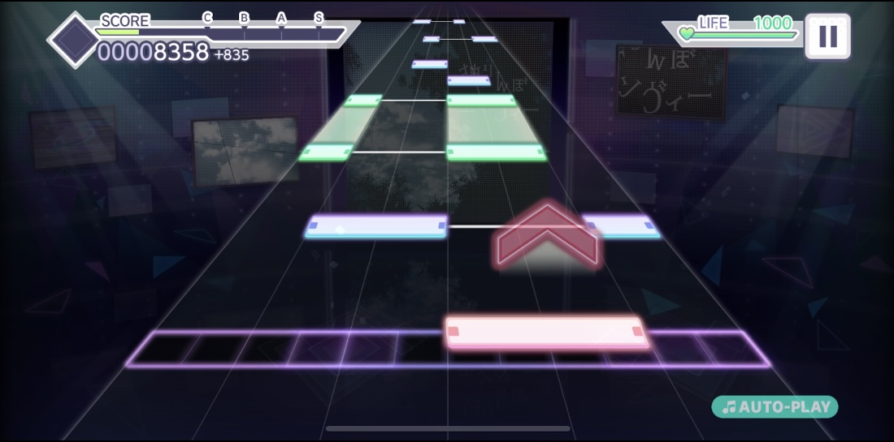
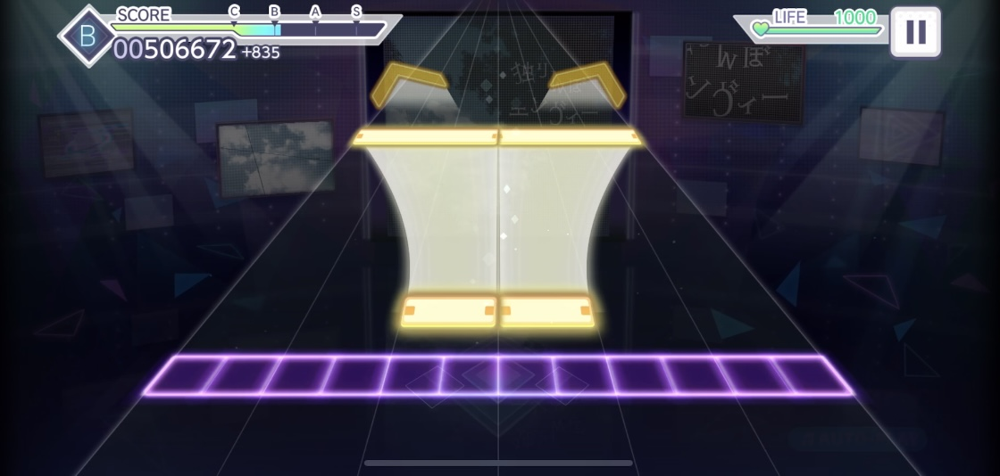
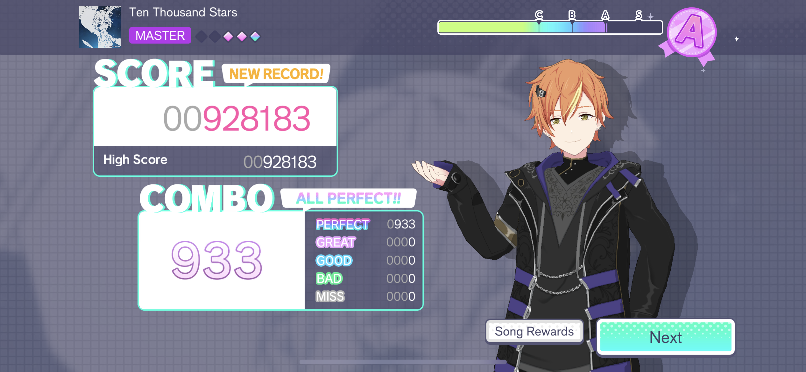

Every song has 5 difficulty levels (Easy, Normal, Hard, Expert, and Master) and each difficulty level has its own beat map/chart.
The blue notes are tap notes. The red notes are flick notes. The green notes are hold/slider notes.
There are also gold notes for each of the different types of notes. (So gold tap notes, gold slider/hold notes, and gold flick notes). Gold notes give double the points that the regular (not gold) notes do.
Factors that are important to gameplay are:
Your score depends on your performance in the song and talent of your team, which depends on the cards you use. If you are playing multi-player, your score is dependent on all the people you are playing with. There is also Score Rank (C, B, A or S) depending on how high your score is.
Your combo is a measure of your performance. Perfect, Great, Good, Bad, and Miss are like measures of accuracy. To get a Full Combo, you must hit all notes as Perfect or Great. To get an All Perfect, you must hit all notes as Perfect. Your accuracy also plays a part in your Health.
Your health at the start of every song/game is 1000. You lose health by hitting a note as Bad (-50) or Miss (-80). You can gain health depending on the Skill of the cards you use. If you are playing a single-player game and your health runs out (gets to 0) you have "failed" the song and can continue by using crystals or you can retry the song. If you are playing a multi-player game and your health runs out, it doesn't matter and you can still keep playing the song until the end.
There are certain settings in the game that can be adjusted to better fit your gameplay, such as the speed and timing of the notes and the brightness and transparency of the lanes.
There are also different kinds of shows you can play in the game. There's single-player, multi-player, and ranked matches where you play against someone to essentially see who is more accurate.